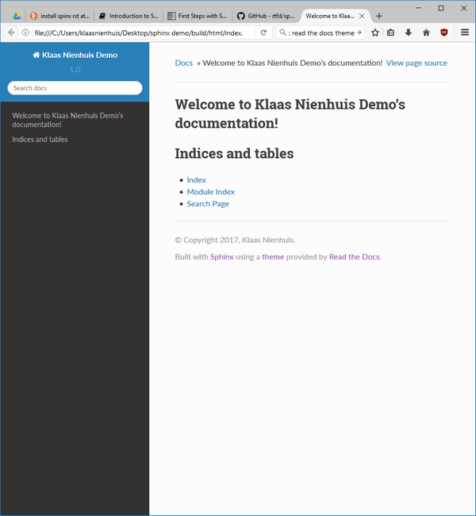

Your first project¶
Setting up your first project is easiest by using sphinx-quickstart in a command prompt and following along with the questionnaire. It will create a folder for you with all the necessary files. For the docs in this tutorial I’ve used the default values except for > githubpages: create .nojekyll file to publish the document on GitHub pages (y/n) [n]: y. I’ve picked yes because I want to publish on github pages later on.
You can follow along with the documentation on sphinx-doc.org.
Theme¶
Sphinx docs can be themed. The default theme is called Alabaster, but I like the Read the Docs theme more. It’s what you’re looking at right now! We’ve already installed it in the previous step, now we need to add it to the project. Check out the github page for the theme how to do that. Basically, you need to add to the conf.py file:
import sphinx_rtd_theme
html_theme = "sphinx_rtd_theme"
html_theme_path = [sphinx_rtd_theme.get_html_theme_path()]
The alabster theme
The Read the Docs theme
Building¶
Now that the project is set up, let’s build it. Go to the folder where your project is and look up the Make.bat file. Start a command promp and enter make html. Your documentation should be built into an html form. Find the _build\html\index.html file and open it in a browser. That’s it, your first sphinx documentation!